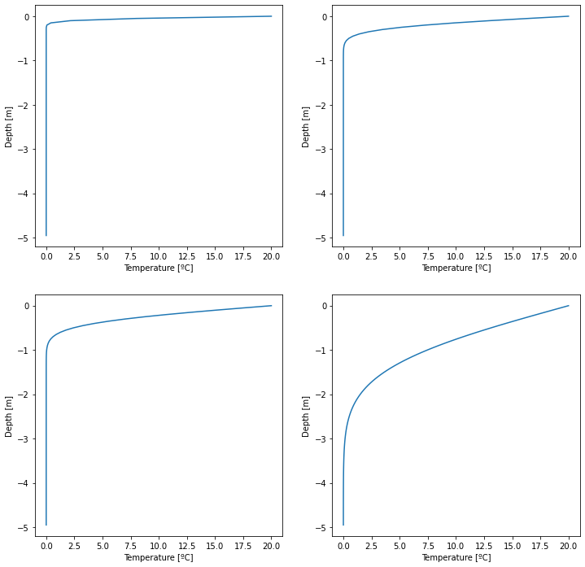
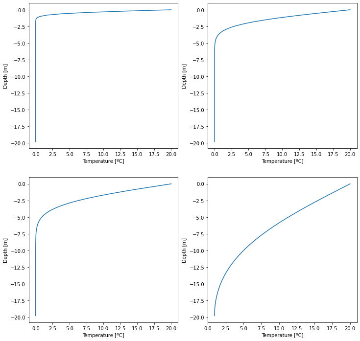
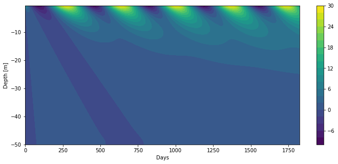
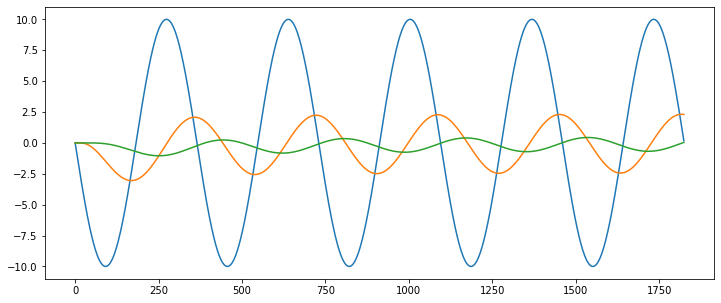

Heat Equation
Contents
Heat Equation#
Integrate the heat equation for several days using a time step of 1 hour and a heat conductivity of 𝜈_𝑔 = 1.2e-6 [m2 s-1 ]. Plot the result. Once the code works, change the integration time. What happens if you integrate over a very long time?
import numpy as np
import matplotlib.pyplot as plt
import math
def heat_equation(bc_surface, bc_bottom, depth, Nz, integration, dt):
''' Solves the heat equation
bc_surface :: boundary condition at the surface
bc_bottom :: boundary condition at the bottom
depth :: depth of the domain [m]
Nz :: number of grid points
integration:: number of iterations
dt :: time step [s]
'''
# Definitions
dz = depth/Nz # Distance between grid points
alpha = 1.2e-6 # Conductivity
# Initialize temperature and depth field
T = np.zeros(Nz)
T[0] = bc_surface # Set pen-ultima array to bc value (because the last grid cell
# is required to calculate the second order derivative)
T[Nz-1] = bc_bottom # Set the first elemnt to the bottom value
# Create the solution vector for new timestep (we need to store the temperature values
# at the old time step)
Tnew = T.copy()
# Loop over all times
for t in range(integration):
# Loop over all grid points
for z in range(1,Nz-1):
Tnew[z] = T[z] + ((T[z+1] + T[z-1] - 2*T[z])/dz**2) * dt * alpha
# Update old temperature array
T = Tnew.copy()
# Neumann boundary condition
T[Nz-1] = T[Nz-2]
# return vertical temperature profile and grid spacing
return T, dz
# Plot results
fig, ax = plt.subplots(2,2,figsize=(12,12))
Nz = 100
T, dz = heat_equation(20, 0, 5, Nz, 24, 60)
ax[0,0].plot(T,-dz*np.arange(Nz));
ax[0,0].set_xlabel('Temperature [ºC]')
ax[0,0].set_ylabel('Depth [m]')
T, dz = heat_equation(20, 0, 5, Nz, 24*14, 60)
ax[0,1].plot(T,-dz*np.arange(Nz));
ax[0,1].set_xlabel('Temperature [ºC]')
ax[0,1].set_ylabel('Depth [m]')
T, dz = heat_equation(20, 0, 5, Nz, 24*30, 60)
ax[1,0].plot(T,-dz*np.arange(Nz));
ax[1,0].set_xlabel('Temperature [ºC]')
ax[1,0].set_ylabel('Depth [m]')
T, dz = heat_equation(20, 0, 5, Nz, 24*365, 60)
ax[1,1].plot(T,-dz*np.arange(Nz));
ax[1,1].set_xlabel('Temperature [ºC]')
ax[1,1].set_ylabel('Depth [m]')
plt.show()

Heat equation with index arrays#
%matplotlib inline
import numpy as np
import matplotlib.pyplot as plt
import math
def heat_equation_indices(bc_surface, bc_bottom, depth, Nz, integration, dt):
''' Solves the heat equation using index arrays
bc_surface :: boundary condition at the surface
bc_bottom :: boundary condition at the bottom
depth :: depth of the domain [m]
Nz :: number of grid points
integration:: number of iterations
dt :: time step [s]
'''
# Definitions
dz = depth/Nz # Distance between grid points
alpha = 1.2e-6 # Conductivity
# Define index arrays
k = np.arange(1,Nz-1) # all indices at location i
kr = np.arange(2,Nz) # all indices at location i+1
kl = np.arange(0,Nz-2) # all indices at location i-1
# Initialize temperature and depth field
T = np.zeros(Nz)
T[0] = bc_surface # Set pen-ultima array to bc value (because the last grid cell
# is required to calculate the second order derivative)
T[Nz-1] = bc_bottom # Set the first elemnt to the bottom value
# Create the solution vector for new timestep (we need to store the temperature values
# at the old time step)
Tnew = T.copy()
# Loop over all times
for t in range(integration):
# Update temperature
Tnew[k] = T[k] + ((T[kr] + T[kl] - 2*T[k])/dz**2) * dt * alpha
# Update old temperature array
T = Tnew.copy()
# Neumann boundary condition
T[Nz-1] = T[Nz-2]
# return vertical temperature profile and grid spacing
return T, dz
# Plot results
fig, ax = plt.subplots(2,2,figsize=(12,12))
Nz = 100
T, dz = heat_equation_indices(20, 0, 5, Nz, 24, 60)
ax[0,0].plot(T,-dz*np.arange(Nz));
ax[0,0].set_xlabel('Temperature [ºC]')
ax[0,0].set_ylabel('Depth [m]')
T, dz = heat_equation_indices(20, 0, 5, Nz, 24*14, 60)
ax[0,1].plot(T,-dz*np.arange(Nz));
ax[0,1].set_xlabel('Temperature [ºC]')
ax[0,1].set_ylabel('Depth [m]')
T, dz = heat_equation_indices(20, 0, 5, Nz, 24*30, 60)
ax[1,0].plot(T,-dz*np.arange(Nz));
ax[1,0].set_xlabel('Temperature [ºC]')
ax[1,0].set_ylabel('Depth [m]')
T, dz = heat_equation_indices(20, 0, 5, Nz, 24*365, 60)
ax[1,1].plot(T,-dz*np.arange(Nz));
ax[1,1].set_xlabel('Temperature [ºC]')
ax[1,1].set_ylabel('Depth [m]')
plt.show()

Time-dependent heat equation#
Using the previous code, solve the Heat Equation using a temporal varying surface boundary condition. Use the following discretization: I = [0; 20 m], N = 40 grid points, 𝜈_𝑔 = 1.2e-6 [m2 s-1 ], and a daily time step. Integrate the equation for several years, e.g. 5 years. Plot the result as a contour plot. Also plot temperature time series in several depths. Discuss the plot!
import numpy as np
import matplotlib.pyplot as plt
import math
def heat_equation_time(depth, Nz, years):
""" This is an example of an time-dependent heat equation using a
sinus wave temperature signal at the surface. The heat equation is solved for a
pre-defined number of years over the domain depth using Nz grid points."""
# Definitions and assignments
integration = 365*years # Integration time in days
dz = depth/Nz # Distance between grid points
dt = 86400 # Time step in seconds (for each day)
K = 1.2e-6 # Conductivity
# Define index arrays
k = np.arange(1,Nz-1) # all indices at location i
kr = np.arange(2,Nz) # all indices at location i+1
kl = np.arange(0,Nz-2) # all indices at location i-1
# Initial temperature field
T = np.zeros(Nz)
# Create array for new temperature values
Tnew = T
# 2D-Array containing the vertical profiles for all time steps (depth, time)
T_all = np.zeros((Nz,int(integration)))
# Time loop
for t in range(integration):
# Set top BC - Dirlichet condition
T[0] = 0 - 10 * np.sin((2*math.pi*t)/365)
# Set lower BC - Neumann condition
T[Nz-1] = T[Nz-2]
# Update temperature using indices arrays
Tnew[k] = T[k] + ((T[kr] + T[kl] - 2*T[k])/dz**2) * dt * K
# Copy the new temperature als old timestep values (used for the
# next time loop step)
T = Tnew
# Write result into the final array
T_all[:,t] = T
# return temperature array, grid spacing, and number of integration steps
return T_all, dz, integration
# Solve the heat equation
T_all, dz, integration = heat_equation_time(20, 40, 5)
# Create 2D mesh grid
# First create the y-axis values
y = np.arange(-20,0,dz)
# then the x-axis values
x = np.arange(integration)
# use the arrays to create a 2D-mesh
X, Y = np.meshgrid(x, y)
# Plot results on the mesh
plt.figure(figsize=(12,5))
plt.contourf(X,Y,T_all[::-1],25,origin='lower');
# Axis labels
plt.xlabel('Days')
plt.ylabel('Depth [m]')
plt.colorbar();

# Plot temperature in several depths
plt.figure(figsize=(12,5))
plt.plot(T_all[0,:]);
plt.plot(T_all[10,:]);
plt.plot(T_all[20,:]);
